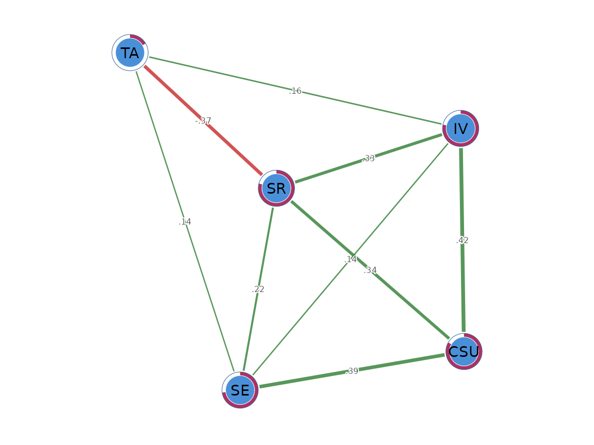

Stepwise Gaussian graphical model selection
Mohammed Saqr
University of Eastern FinlandSonsoles López-Pernas
University of Eastern FinlandSource:
vignettes/ggm-model-selection.Rmd
ggm-model-selection.RmdWhich links between psychological constructs should remain in a model after the other measured variables have been considered? Stepwise Gaussian graphical model selection addresses the task of identifying a set of conditional associations rather than displaying every pairwise correlation. In a Gaussian graphical model (GGM), constructs appear as nodes and edges indicate partial correlations between two variables after adjustment for the rest of the network. The resulting pattern can describe how related psychological characteristics are organised, although selecting an edge does not establish a causal relationship (Epskamp et al., 2018; Saqr et al., 2024).
Selecting the edges is an important part of estimating a GGM. A widely used approach, the graphical lasso, applies a penalty to estimate a sparse network, but it also shrinks retained partial correlations towards zero (Epskamp & Fried, 2018). This can complicate the interpretation of edge magnitudes. Stepwise model selection offers an alternative: it compares candidate graphs using an information criterion and then estimates the edges of the selected graph by unpenalised maximum likelihood (Williams et al., 2019). The extended Bayesian information criterion provides a way to balance model fit and complexity (Foygel & Drton, 2010). Neither approach is preferable in every setting; sample size, network dimension and the purpose of the analysis should inform the choice of estimator (Isvoranu & Epskamp, 2023; Williams & Rast, 2020).
In education, psychological networks have been used to investigate relationships among learning strategies, motivation and the regulation of learning. Network approaches can represent the interdependence of learning-related processes without treating every association as a direct effect. For example, Saqr et al. (2021) examined the relational and temporal dynamics of self-regulation in academic writing, while Malmberg et al. (2022) analysed how students’ monitoring events were associated with phases of regulation. These applications illustrate the value of considering several interconnected processes, alongside the need to distinguish descriptive associations from explanations of how learning occurs.
This article demonstrates stepwise GGM selection with
psychnets using five self-regulated learning constructs
from a dataset of language-model-generated questionnaire responses
(Vogelsmeier et al., 2025). It explains the selection criterion, fits
and interprets the resulting network, verifies the numerical solution,
and compares the selected edges with those from the graphical lasso. It
also examines node centrality and predictability and repeats the
analysis using rank-based correlations. The example is intended to guide
applied researchers through estimation and interpretation, not to draw
conclusions about actual students.
The model
A GGM describes conditional associations among continuous variables. Under multivariate normality, the precision matrix is the inverse of the covariance matrix. An edge between and corresponds to a non-zero partial correlation
The procedure compares candidate graphs using the extended Bayesian information criterion (EBIC),
Here, is the log-likelihood after refitting the graph without a penalty, is its number of edges, is the sample size and is the number of nodes. The parameter controls the additional penalty for model complexity; the default gives the ordinary Bayesian information criterion (BIC). Lower scores indicate a better balance of fit and complexity.
The search has two stages. First, a graphical-lasso path provides candidate graphs, from which the lowest-scoring graph is selected after each candidate has been refitted by maximum likelihood. Next, the algorithm considers adding or removing a single edge and accepts changes that reduce the criterion. It stops when neither type of single-edge change improves the score. The selected network is therefore a local optimum, not necessarily the best graph among all possible graphs.
Data
SRL_GPT contains 300 sets of questionnaire responses
summarised as construct scores on a scale from 1 to 7. The scores relate
to the Motivated Strategies for Learning Questionnaire. They were
generated by a large language model (GPT) as part of a study of how
these models respond to psychological surveys (Vogelsmeier et al.,
2025). They provide an example for demonstrating the method, but they
are not observations of students and should not be interpreted as
evidence about student learning.
-
Nodes: five construct scores, treated as
continuous:
CSU(cognitive strategy use),IV(intrinsic value),SE(self-efficacy),SR(self-regulation) andTA(test anxiety). - Observations: one row per generated response set; the data are complete.
head(SRL_GPT)
#> CSU IV SE SR TA
#> 1 5.307692 5.666667 5.777778 5.333333 4.00
#> 2 5.846154 6.444444 6.000000 5.777778 4.00
#> 3 6.615385 6.666667 6.222222 6.333333 3.25
#> 4 5.692308 6.555556 6.333333 5.555556 4.50
#> 5 4.384615 5.555556 4.888889 4.777778 4.00
#> 6 4.846154 5.444444 5.666667 5.111111 3.50There are 300 observations for five variables. This relatively favourable ratio of observations to variables makes the example suitable for illustrating unpenalised estimation, although adequate sample size alone does not establish that a selected network is stable.
Which constructs are directly associated?
The call to psychnet() with method = "ggm"
selects a GGM by the stepwise procedure. The summary reports the number
of nodes and retained edges, together with a numerical optimality check
and the range of estimated edge weights.
stepwise_net <- psychnet(data = SRL_GPT, method = "ggm")
summary(stepwise_net)
#> <psychnet> ggm network
#> nodes: 5 edges: 9 (undirected)
#> optimality (KKT residual): 7.77e-16
#> edge weight: range [-0.370, 0.422], mean 0.196The selected graph retains 9 of the 10 possible edges. Its estimated partial correlations range from -0.370 to 0.422. The following table identifies the connected pairs and their unpenalised edge weights:
as.data.frame(stepwise_net)
#> from to weight
#> 1 CSU IV 0.4215770
#> 2 CSU SE 0.3921754
#> 3 IV SE 0.1416604
#> 4 CSU SR 0.3385710
#> 5 IV SR 0.3333520
#> 6 SE SR 0.2173406
#> 7 IV TA 0.1565223
#> 8 SE TA 0.1368928
#> 9 SR TA -0.3699703The four learning-related constructs are connected by positive edges.
The largest positive partial correlation is between cognitive strategy
use and intrinsic value (0.422), followed by cognitive strategy use and
self-efficacy (0.392). These are conditional associations after
accounting for the other constructs, rather than estimates of the
effects of one construct on another. The only negative edge connects
self-regulation and test anxiety (-0.370). Test anxiety also has smaller
positive edges with intrinsic value (0.157) and self-efficacy (0.137).
The CSU–TA edge is absent. Under the selected
graph, its partial correlation is constrained to zero, although this
does not establish that the constructs are unrelated in the
population.
Is the refitted network the maximum-likelihood solution?
Once the graph has been selected, its retained edges are estimated by maximum likelihood, with the absent edges constrained to zero. The Karush–Kuhn–Tucker optimality conditions provide a numerical check of this fit. In particular, the fitted covariance must match the observed covariance in the positions corresponding to the diagonal and retained edges, while the precision matrix must have zeros for absent edges. The certificate summarises the extent to which these conditions are violated; a value close to zero indicates that the fitted parameters satisfy the optimisation conditions for the selected graph.
certificate(stepwise_net)
#> method certificate kind certified
#> 1 ggm 7.771561e-16 kkt TRUEThe certificate is approximately , below , and the fit is marked as certified. This provides strong numerical evidence that the reported parameters solve the maximum-likelihood problem for the selected graph. It does not show that the graph itself is the correct model or that its estimated edges would be stable in another sample.
How does the selection differ from the graphical lasso?
For comparison, method = "glasso" fits a penalised GGM
to the same data. This makes it possible to inspect differences in the
selected edges and their estimated magnitudes.
glasso_net <- psychnet(data = SRL_GPT, method = "glasso")
summary(glasso_net)
#> <psychnet> glasso network
#> nodes: 5 edges: 10 (undirected)
#> lambda: 0.00861 gamma: 0.5
#> optimality (KKT residual): 2.21e-10
#> edge weight: range [-0.350, 0.412], mean 0.174
as.data.frame(glasso_net)
#> from to weight
#> 1 CSU IV 0.41166866
#> 2 CSU SE 0.38290223
#> 3 IV SE 0.15992605
#> 4 CSU SR 0.35481359
#> 5 IV SR 0.31909443
#> 6 SE SR 0.20767208
#> 7 CSU TA 0.04906668
#> 8 IV TA 0.11058735
#> 9 SE TA 0.09871818
#> 10 SR TA -0.34985157The graphical lasso retains all 10 possible edges, including a small
CSU–TA partial correlation (0.049) that is
absent from the stepwise graph. Of the nine edges shared by the methods,
seven have larger absolute weights under stepwise selection. For
example, CSU–IV is 0.422 in the stepwise
network and 0.412 in the graphical-lasso network, while
SR–TA is -0.370 and -0.350, respectively. Two
shared edges are instead larger in absolute value under the graphical
lasso, so the comparison should not be read as a uniform difference in
every estimate. Both methods identify broadly similar patterns in these
data, but they differ in edge inclusion and magnitude. Unpenalised
refitting can be useful when edge sizes are of primary interest,
provided the sample supports it; penalisation may be preferable when
estimation would otherwise be unstable.
Which constructs are most connected?
net_centralities() summarises how each node is connected
to the remaining network. Strength is the sum of the absolute weights of
its incident edges, whereas expected influence retains the signs when
summing those weights.
net_centralities(stepwise_net)
#> node strength expected_influence
#> 1 CSU 1.1523235 1.15232352
#> 2 IV 1.0531117 1.05311170
#> 3 SE 0.8880693 0.88806926
#> 4 SR 1.2592340 0.51929333
#> 5 TA 0.6633854 -0.07655525Self-regulation has the greatest strength (1.259), followed by cognitive strategy use (1.152). Because self-regulation has a negative edge with test anxiety, its expected influence is lower (0.519). By contrast, all edges incident to cognitive strategy use are positive, so its strength and expected influence are both 1.152. Test anxiety has the lowest strength (0.663) and a slightly negative expected influence (-0.077). These measures describe connections in the fitted network. They should not be interpreted as evidence that a highly connected construct causes changes elsewhere or is necessarily the best target for intervention.
How well is each construct predicted by the others?
net_predict() reports the predictability of each node as
,
the proportion of its variance accounted for by the other nodes in the
fitted model. For a GGM, it is calculated from the precision matrix as
.
net_predict(stepwise_net)
#> node type metric predictability accuracy
#> 1 CSU gaussian R2 0.8327378 NA
#> 2 IV gaussian R2 0.7831430 NA
#> 3 SE gaussian R2 0.7279821 NA
#> 4 SR gaussian R2 0.7920188 NA
#> 5 TA gaussian R2 0.1656566 NAPredictability is highest for cognitive strategy use (), followed by self-regulation (), intrinsic value () and self-efficacy (). Test anxiety is much less predictable from the other four constructs (). Expressed as percentages, these values correspond to approximately 83%, 79%, 78%, 73% and 17% of the variance, respectively. They describe fit within the analysed dataset, not predictive accuracy for new observations. External or cross-validated assessment would be needed to evaluate out-of-sample prediction.
What does the network look like?
cograph::splot() provides a visual summary of the fitted
network. With these plotting options, positive and negative edges are
distinguished by green and red, and a ring around each node represents
its estimated predictability.
cograph::splot(stepwise_net, psych_styling = TRUE, predictability = TRUE)
The plot highlights the positive connections among the learning constructs and the negative connection between self-regulation and test anxiety. The comparatively small predictability ring around test anxiety is consistent with its lower . Node positions are determined by the plotting layout and should not be interpreted as measured distances between constructs.
Does the selection depend on the correlation estimator?
As a sensitivity check, cor_method = "spearman" repeats
the selection using rank correlations rather than Pearson correlations.
Rank correlations are generally less sensitive to extreme values and
non-normal marginal distributions, although they do not remove all
modelling assumptions.
spearman_net <- psychnet(data = SRL_GPT, method = "ggm",
cor_method = "spearman")
summary(spearman_net)
#> <psychnet> ggm network
#> nodes: 5 edges: 7 (undirected)
#> optimality (KKT residual): 8.88e-16
#> edge weight: range [-0.266, 0.483], mean 0.245
as.data.frame(spearman_net)
#> from to weight
#> 1 CSU IV 0.4626441
#> 2 CSU SE 0.4832486
#> 3 CSU SR 0.2856316
#> 4 IV SR 0.3865529
#> 5 SE SR 0.1948044
#> 6 IV TA 0.1652304
#> 7 SR TA -0.2664620
certificate(spearman_net)
#> method certificate kind certified
#> 1 ggm 8.881784e-16 kkt TRUEThe rank-based model retains 7 edges, compared with 9 in the
Pearson-based model. It keeps five positive edges among the learning
constructs, the positive IV–TA edge and the
negative SR–TA edge (-0.266). The
IV–SE and SE–TA
edges selected using Pearson correlations are no longer retained. Its
certificate is approximately
,
again indicating a numerically satisfactory fit. The main pattern of
positive connections among learning constructs and a negative
association between self-regulation and test anxiety is present in both
networks, but inclusion of the weaker edges depends on the correlation
estimator.
Reporting the analysis
A report of stepwise GGM selection should identify the variables and sample size, explain how missing data were handled, and specify the correlation estimator and selection criterion, including . It should also make clear that retained edges are unpenalised maximum-likelihood partial correlations conditional on the selected graph. Information about sensitivity and uncertainty is important when interpreting the model.
In this example, stepwise GGM selection using Pearson correlations and BIC () retained 9 of 10 possible edges from 300 complete, model-generated response sets. The largest positive partial correlation was between cognitive strategy use and intrinsic value (0.422), and the sole negative edge was between self-regulation and test anxiety (-0.370). Repeating the selection with Spearman correlations retained 7 edges, preserving these broad patterns but excluding two weaker connections.
Assumptions and when to use stepwise selection
- A standard GGM assumes continuous variables, approximate multivariate normality and independent observations. Researchers should consider whether these assumptions are reasonable for their measures and sampling design.
- Unpenalised estimates require sufficient information relative to the number of variables and possible edges. When observations are scarce relative to model complexity, penalised methods may provide more stable estimates.
- Stepwise selection separates graph selection from estimation of edge magnitudes. The retained edges are not penalised, but they remain subject to sampling uncertainty and possible selection error. This is not a guarantee of unbiased estimates after model selection.
- The stepwise search reaches a local optimum. Different correlation estimators, values of or samples may lead to different graphs. Resampling and sensitivity analyses can help assess robustness (see the network reliability article).
How to cite this article
Saqr, M., & López-Pernas, S. (2026). Stepwise Gaussian graphical model selection. psychnets. https://doi.org/10.5281/zenodo.24567508 · HTML · PDF
References
Epskamp, S., Borsboom, D., & Fried, E. I. (2018). Estimating psychological networks and their accuracy: A tutorial paper. Behavior Research Methods, 50(1), 195-212. doi:10.3758/s13428-017-0862-1
Epskamp, S., & Fried, E. I. (2018). A tutorial on regularized partial correlation networks. Psychological Methods, 23(4), 617-634. doi:10.1037/met0000167
Foygel, R., & Drton, M. (2010). Extended Bayesian information criteria for Gaussian graphical models. Advances in Neural Information Processing Systems, 23, 604-612.
Isvoranu, A.-M., & Epskamp, S. (2023). Which estimation method to choose in network psychometrics? Deriving guidelines for applied researchers. Psychological Methods, 28(4), 925-946. doi:10.1037/met0000439
Malmberg, J., Saqr, M., Järvenoja, H., & Järvelä, S. (2022). How the monitoring events of individual students are associated with phases of regulation: A network analysis approach. Journal of Learning Analytics, 9(1), 77-92. doi:10.18608/jla.2022.7429
Saqr, M., Beck, E., & López-Pernas, S. (2024). Psychological networks: A modern approach to analysis of learning and complex learning processes. In M. Saqr & S. López-Pernas (Eds.), Learning analytics methods and tutorials: A practical guide using R (pp. 639-671). Springer. doi:10.1007/978-3-031-54464-4_19
Saqr, M., Peeters, W., & Viberg, O. (2021). The relational, co-temporal, contemporaneous, and longitudinal dynamics of self-regulation for academic writing. Research and Practice in Technology Enhanced Learning, 16, 29. doi:10.1186/s41039-021-00175-7
Vogelsmeier, L. V. D. E., Oliveira, E., Misiejuk, K., López-Pernas, S., & Saqr, M. (2025). Delving into the psychology of machines: Exploring the structure of self-regulated learning via LLM-generated survey responses. Computers in Human Behavior, 173, 108769. doi:10.1016/j.chb.2025.108769
Williams, D. R., & Rast, P. (2020). Back to the basics: Rethinking partial correlation network methodology. British Journal of Mathematical and Statistical Psychology, 73(2), 187-212. doi:10.1111/bmsp.12173
Williams, D. R., Rhemtulla, M., Wysocki, A. C., & Rast, P. (2019). On nonregularized estimation of psychological networks. Multivariate Behavioral Research, 54(5), 719-750. doi:10.1080/00273171.2019.1575716